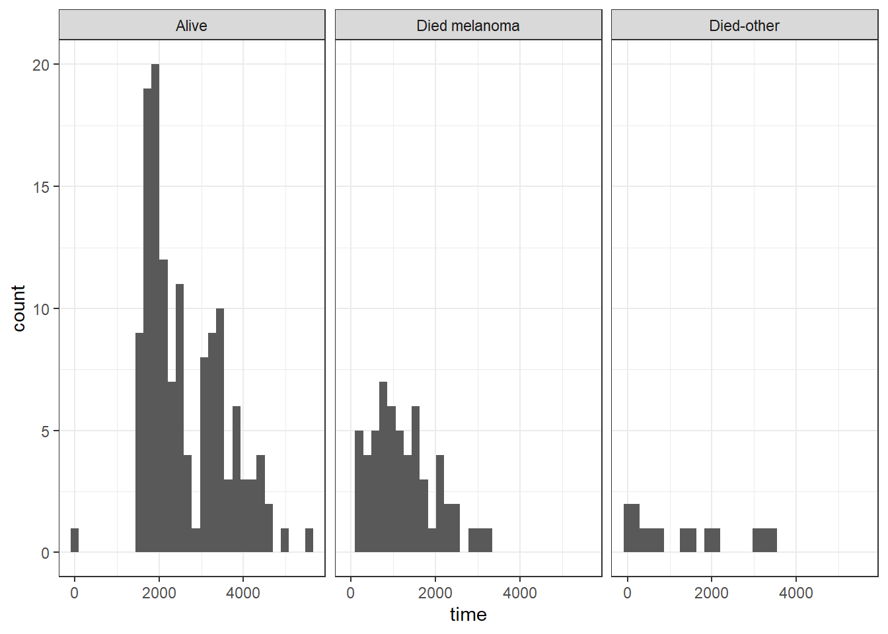
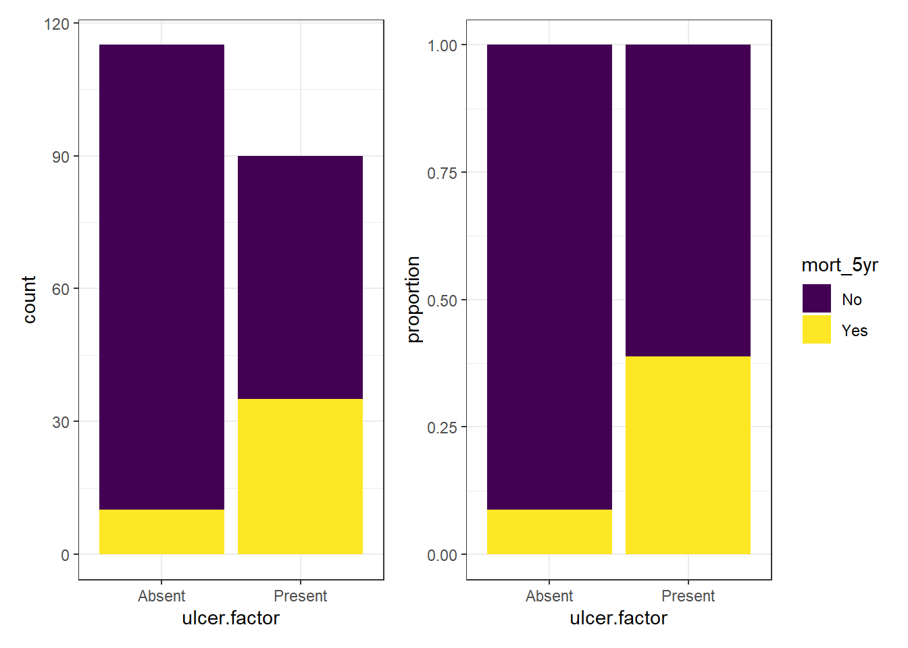
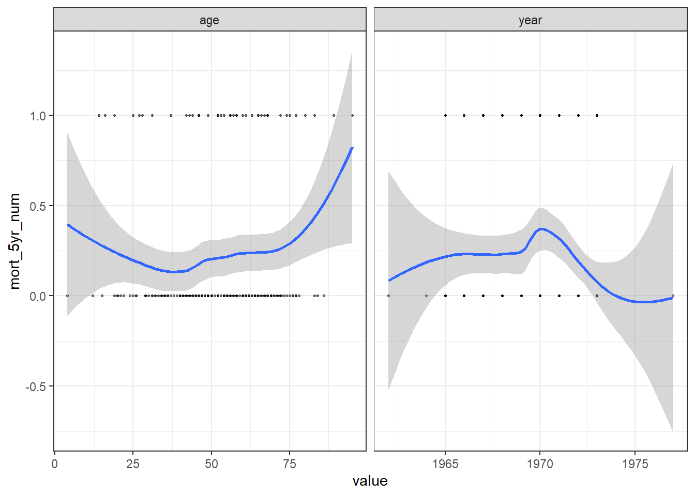
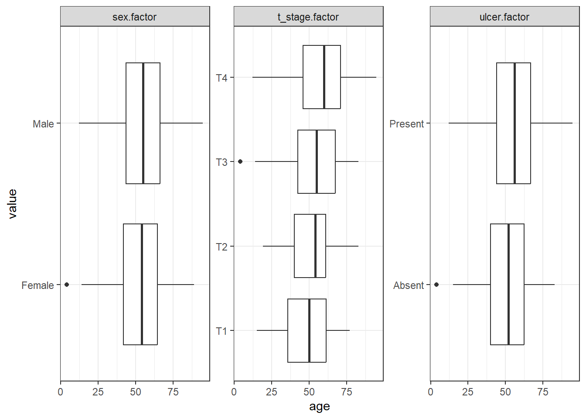
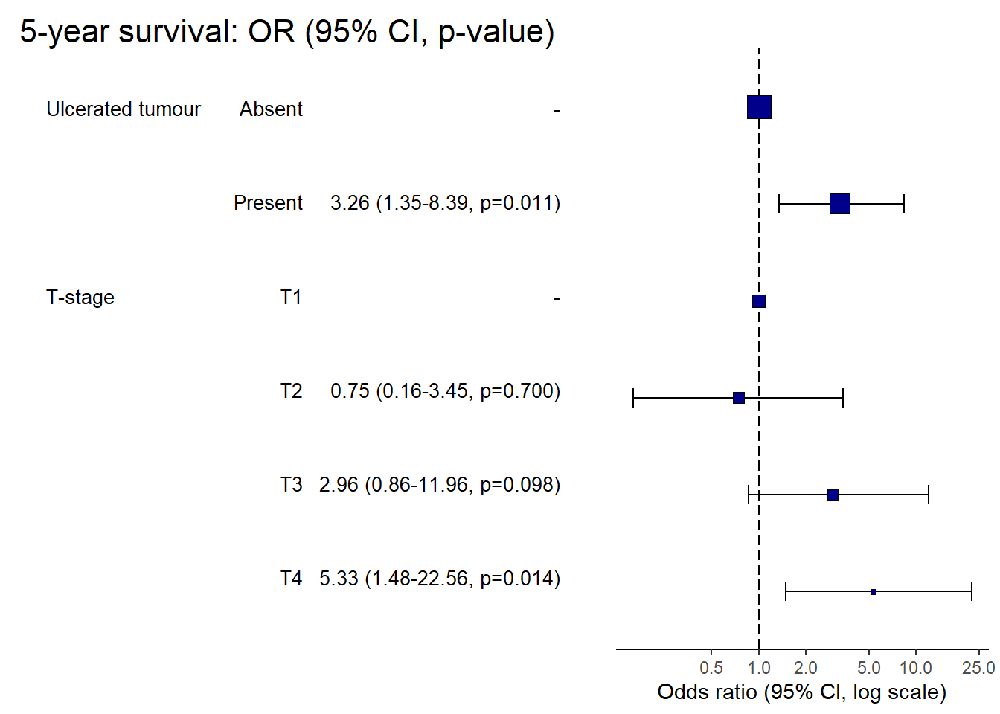
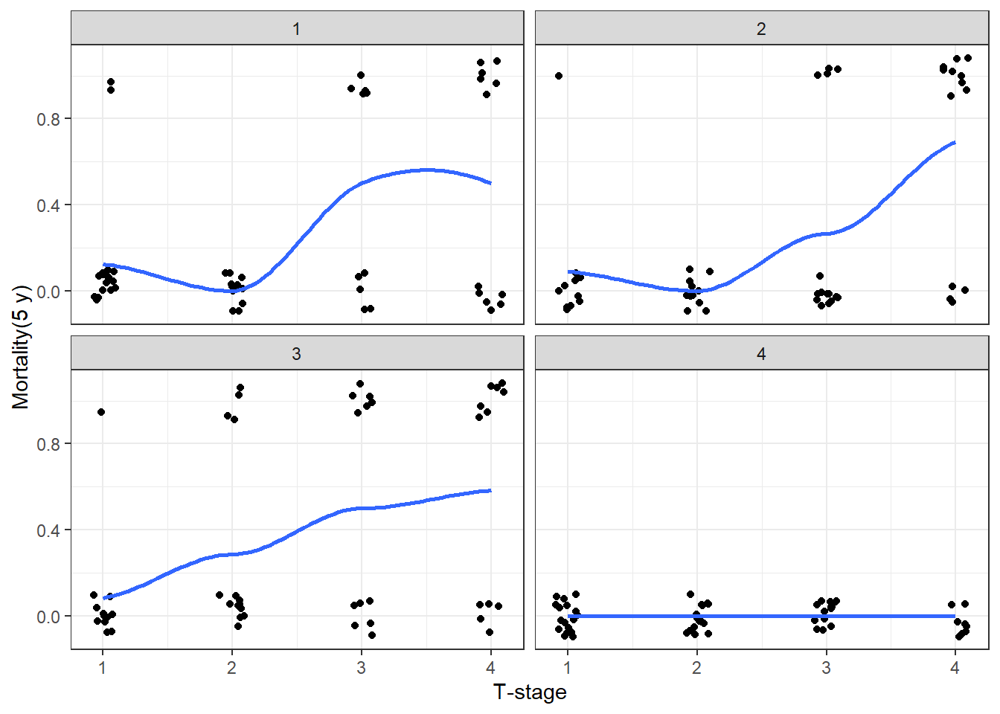

library(tidyverse)
library(gtsummary)
library(gt)
library(finalfit)
library(broom)
library(patchwork)
theme_set(theme_bw())LOGISTIC REGRESSION
Check the data
melanoma <- boot::melanoma
melanoma %>% glimpse()Rows: 205
Columns: 7
$ time <dbl> 10, 30, 35, 99, 185, 204, 210, 232, 232, 279, 295, 355, 386,…
$ status <dbl> 3, 3, 2, 3, 1, 1, 1, 3, 1, 1, 1, 3, 1, 1, 1, 3, 1, 1, 1, 1, …
$ sex <dbl> 1, 1, 1, 0, 1, 1, 1, 0, 1, 0, 0, 0, 0, 1, 0, 1, 1, 1, 1, 1, …
$ age <dbl> 76, 56, 41, 71, 52, 28, 77, 60, 49, 68, 53, 64, 68, 63, 14, …
$ year <dbl> 1972, 1968, 1977, 1968, 1965, 1971, 1972, 1974, 1968, 1971, …
$ thickness <dbl> 6.76, 0.65, 1.34, 2.90, 12.08, 4.84, 5.16, 3.22, 12.88, 7.41…
$ ulcer <dbl> 1, 0, 0, 0, 1, 1, 1, 1, 1, 1, 1, 1, 1, 1, 1, 1, 1, 1, 1, 1, …melanoma %>% ff_glimpse()$Continuous
label var_type n missing_n missing_percent mean sd min
time time <dbl> 205 0 0.0 2152.8 1122.1 10.0
status status <dbl> 205 0 0.0 1.8 0.6 1.0
sex sex <dbl> 205 0 0.0 0.4 0.5 0.0
age age <dbl> 205 0 0.0 52.5 16.7 4.0
year year <dbl> 205 0 0.0 1969.9 2.6 1962.0
thickness thickness <dbl> 205 0 0.0 2.9 3.0 0.1
ulcer ulcer <dbl> 205 0 0.0 0.4 0.5 0.0
quartile_25 median quartile_75 max
time 1525.0 2005.0 3042.0 5565.0
status 1.0 2.0 2.0 3.0
sex 0.0 0.0 1.0 1.0
age 42.0 54.0 65.0 95.0
year 1968.0 1970.0 1972.0 1977.0
thickness 1.0 1.9 3.6 17.4
ulcer 0.0 0.0 1.0 1.0
$Categorical
data frame with 0 columns and 205 rowsRecode the data
melanoma <- melanoma %>%
mutate(sex.factor= factor(sex) %>%
fct_recode("Female" = "0",
"Male"= "1") %>%
ff_label("Sex"),
ulcer.factor = factor(ulcer) %>%
fct_recode("Present"= "1",
"Absent"= "0") %>%
ff_label("Ulcerated tumour"),
age =ff_label(age,"Age (years)"),
year = ff_label(year, "Year"),
status.factor=factor(status) %>%
fct_recode("Died melanoma" = "1",
"Alive" = "2",
"Died-other" = "3") %>%
fct_relevel("Alive") %>%
ff_label("Status"),
t_stage.factor = thickness %>%
cut(breaks = c(0,1.0,2.0,4.0,max(thickness,na.rm = TRUE)),
include.lowest = TRUE) %>%
fct_recode(
"T1" = "[0,1]",
"T2" = "(1,2]",
"T3" = "(2,4]",
"T4" = "(4,17.4]") %>%
ff_label("T-stage")
)melanoma %>%
ggplot(aes(x = time))+
geom_histogram()+
facet_grid(.~status.factor)
melanoma <- melanoma %>%
mutate(mort_5yr =
if_else((time/365)< 5 & (status ==1),
"Yes","No") %>%
fct_relevel("No") %>%
ff_label("5-year survival"))p1 <- melanoma %>%
ggplot(aes(x = ulcer.factor, fill = mort_5yr))+
geom_bar()+
theme(legend.position = "none")+
scale_fill_viridis_d( option = "viridis")
p2 <- melanoma %>%
ggplot(aes(x = ulcer.factor, fill = mort_5yr))+
geom_bar(position = "fill")+
ylab("proportion")+
scale_fill_viridis_d( option = "viridis")
p1+p2
Tabulate Data
dependent <- "ulcer.factor"
explanatory <- c("age","sex.factor","year","t_stage.factor")
melanoma %>%
summary_factorlist(dependent,explanatory, p = TRUE,add_dependent_label = TRUE)| Dependent: Ulcerated tumour | Absent | Present | p | |
|---|---|---|---|---|
| Age (years) | Mean (SD) | 50.6 (15.9) | 54.8 (17.4) | 0.072 |
| Sex | Female | 79 (68.7) | 47 (52.2) | 0.024 |
| Male | 36 (31.3) | 43 (47.8) | ||
| Year | Mean (SD) | 1970.0 (2.7) | 1969.8 (2.4) | 0.637 |
| T-stage | T1 | 51 (44.3) | 5 (5.6) | <0.001 |
| T2 | 36 (31.3) | 17 (18.9) | ||
| T3 | 21 (18.3) | 30 (33.3) | ||
| T4 | 7 (6.1) | 38 (42.2) |
melanoma %>%
select(age,sex.factor,year,t_stage.factor,ulcer.factor) %>%
tbl_summary(
by = ulcer.factor,
statistic =
list(all_categorical() ~ "{n} ({p}%)",
all_continuous() ~ "{mean} ({sd})"),
digits = list(all_categorical() ~ 0,
all_continuous() ~ 0),
) %>%
add_overall() %>%
bold_labels() %>%
italicize_levels() %>%
modify_spanning_header(update = all_stat_cols() ~ "**Tumour Ulceration**")| Characteristic | Tumour Ulceration | ||
|---|---|---|---|
| Overall, N = 2051 | Absent, N = 1151 | Present, N = 901 | |
| Age (years) | 52 (17) | 51 (16) | 55 (17) |
| Sex | |||
| Female | 126 (61%) | 79 (69%) | 47 (52%) |
| Male | 79 (39%) | 36 (31%) | 43 (48%) |
| Year | 1,970 (3) | 1,970 (3) | 1,970 (2) |
| T-stage | |||
| T1 | 56 (27%) | 51 (44%) | 5 (6%) |
| T2 | 53 (26%) | 36 (31%) | 17 (19%) |
| T3 | 51 (25%) | 21 (18%) | 30 (33%) |
| T4 | 45 (22%) | 7 (6%) | 38 (42%) |
| 1 Mean (SD); n (%) | |||
melanoma %>%
mutate(
mort_5yr_num = as.numeric(mort_5yr)-1
) %>%
select(mort_5yr_num,age,year) %>%
pivot_longer(all_of(c("age","year")), names_to = "predictors") %>%
ggplot(aes(x = value, y= mort_5yr_num))+
geom_point(size = 0.5, alpha = 0.5)+
geom_smooth(method = "loess")+
facet_wrap(~predictors , scales = "free_x")
select_explanatory <- c("age","ulcer.factor","sex.factor","t_stage.factor")
melanoma %>%
select(all_of(select_explanatory)) %>%
pivot_longer(-age) %>%
ggplot(aes(value,age))+
geom_boxplot()+
facet_wrap(~ name, scale= "free", ncol = 3)+
coord_flip()
select_explanatory <- c("ulcer.factor","sex.factor","t_stage.factor")
melanoma %>%
select(one_of(select_explanatory)) %>%
pivot_longer(-sex.factor) %>%
ggplot(aes(value,fill = sex.factor))+
geom_bar(position = "fill")+
ylab("Proportion")+
facet_wrap(~name, scale = "free", ncol = 2)+
coord_flip()
Variance Inflation Factor
dependent <- "mort_5yr"
explanatory <- c("ulcer.factor","age","sex.factor","year","t_stage.factor")
melanoma %>%
glmmulti(dependent,explanatory) %>%
car::vif() GVIF Df GVIF^(1/(2*Df))
ulcer.factor 1.313355 1 1.146017
age 1.102313 1 1.049911
sex.factor 1.124990 1 1.060655
year 1.102490 1 1.049995
t_stage.factor 1.475550 3 1.066987Fitting Logistic Regression Models In Base R
slr1 <- melanoma %>%
glm(mort_5yr ~ ulcer.factor, family = binomial(), data = .)
summary(slr1)
Call:
glm(formula = mort_5yr ~ ulcer.factor, family = binomial(), data = .)
Coefficients:
Estimate Std. Error z value Pr(>|z|)
(Intercept) -2.3514 0.3309 -7.105 1.20e-12 ***
ulcer.factorPresent 1.8994 0.3953 4.805 1.55e-06 ***
---
Signif. codes: 0 '***' 0.001 '**' 0.01 '*' 0.05 '.' 0.1 ' ' 1
(Dispersion parameter for binomial family taken to be 1)
Null deviance: 215.78 on 204 degrees of freedom
Residual deviance: 188.24 on 203 degrees of freedom
AIC: 192.24
Number of Fisher Scoring iterations: 5coef(slr1) %>% exp() (Intercept) ulcer.factorPresent
0.0952381 6.6818182 confint(slr1) %>% exp() 2.5 % 97.5 %
(Intercept) 0.04662675 0.1730265
ulcer.factorPresent 3.18089978 15.1827225slr1 %>%
tidy(conf.int = TRUE, exponentiate = TRUE)| term | estimate | std.error | statistic | p.value | conf.low | conf.high |
|---|---|---|---|---|---|---|
| (Intercept) | 0.0952381 | 0.3309438 | -7.105059 | 0.0e+00 | 0.0466267 | 0.1730265 |
| ulcer.factorPresent | 6.6818182 | 0.3953189 | 4.804703 | 1.5e-06 | 3.1808998 | 15.1827225 |
slr1 %>% glance()| null.deviance | df.null | logLik | AIC | BIC | deviance | df.residual | nobs |
|---|---|---|---|---|---|---|---|
| 215.7788 | 204 | -94.11787 | 192.2357 | 198.8818 | 188.2357 | 203 | 205 |
Fitting logistic regression models with finalfit
dependent <- "mort_5yr"
explanatory <- "ulcer.factor"
slr2 <- melanoma %>%
finalfit(dependent,explanatory, metrics = TRUE)
knitr::kable(slr2[[1]], row.names=FALSE, align=c("l", "l", "r", "r", "r", "r"))| Dependent: 5-year survival | No | Yes | OR (univariable) | OR (multivariable) | |
|---|---|---|---|---|---|
| Ulcerated tumour | Absent | 105 (91.3) | 10 (8.7) | - | - |
| Present | 55 (61.1) | 35 (38.9) | 6.68 (3.18-15.18, p<0.001) | 6.68 (3.18-15.18, p<0.001) |
knitr::kable(slr2[[2]], row.names=FALSE, col.names="")| Number in dataframe = 205, Number in model = 205, Missing = 0, AIC = 192.2, C-statistic = 0.717, H&L = Chi-sq(8) 0.00 (p=1.000) |
dependent <- "mort_5yr"
explanatory <- c("ulcer.factor","age","sex.factor","t_stage.factor")
slr3 <- melanoma %>%
finalfit(dependent,explanatory, metrics = TRUE)
knitr::kable(slr3[[1]], row.names=FALSE, align=c("l", "l", "r", "r", "r", "r"))| Dependent: 5-year survival | No | Yes | OR (univariable) | OR (multivariable) | |
|---|---|---|---|---|---|
| Ulcerated tumour | Absent | 105 (91.3) | 10 (8.7) | - | - |
| Present | 55 (61.1) | 35 (38.9) | 6.68 (3.18-15.18, p<0.001) | 3.21 (1.32-8.28, p=0.012) | |
| Age (years) | Mean (SD) | 51.7 (16.0) | 55.3 (18.8) | 1.01 (0.99-1.03, p=0.202) | 1.00 (0.98-1.02, p=0.948) |
| Sex | Female | 105 (83.3) | 21 (16.7) | - | - |
| Male | 55 (69.6) | 24 (30.4) | 2.18 (1.12-4.30, p=0.023) | 1.26 (0.57-2.76, p=0.558) | |
| T-stage | T1 | 52 (92.9) | 4 (7.1) | - | - |
| T2 | 49 (92.5) | 4 (7.5) | 1.06 (0.24-4.71, p=0.936) | 0.77 (0.16-3.58, p=0.733) | |
| T3 | 36 (70.6) | 15 (29.4) | 5.42 (1.80-20.22, p=0.005) | 2.98 (0.86-12.10, p=0.098) | |
| T4 | 23 (51.1) | 22 (48.9) | 12.43 (4.21-46.26, p<0.001) | 4.98 (1.34-21.64, p=0.021) |
knitr::kable(slr3[[2]], row.names=FALSE, col.names="")| Number in dataframe = 205, Number in model = 205, Missing = 0, AIC = 188.1, C-statistic = 0.798, H&L = Chi-sq(8) 3.92 (p=0.864) |
melanoma <- melanoma %>%
mutate(age.factor = cut(age,breaks = c(0,25,50,75,100)) %>%
ff_label("Age (years)"))
slr4 <- melanoma %>%
finalfit(dependent,c("ulcer.factor","age.factor"), metrics = TRUE)
knitr::kable(slr4[[1]], row.names=FALSE, align=c("l", "l", "r", "r", "r", "r"))| Dependent: 5-year survival | No | Yes | OR (univariable) | OR (multivariable) | |
|---|---|---|---|---|---|
| Ulcerated tumour | Absent | 105 (91.3) | 10 (8.7) | - | - |
| Present | 55 (61.1) | 35 (38.9) | 6.68 (3.18-15.18, p<0.001) | 6.28 (2.97-14.35, p<0.001) | |
| Age (years) | (0,25] | 10 (71.4) | 4 (28.6) | - | - |
| (25,50] | 62 (84.9) | 11 (15.1) | 0.44 (0.12-1.84, p=0.229) | 0.54 (0.13-2.44, p=0.400) | |
| (50,75] | 79 (76.0) | 25 (24.0) | 0.79 (0.24-3.08, p=0.712) | 0.81 (0.22-3.39, p=0.753) | |
| (75,100] | 9 (64.3) | 5 (35.7) | 1.39 (0.28-7.23, p=0.686) | 1.12 (0.20-6.53, p=0.894) |
knitr::kable(slr4[[2]], row.names=FALSE, col.names="")| Number in dataframe = 205, Number in model = 205, Missing = 0, AIC = 196.6, C-statistic = 0.742, H&L = Chi-sq(8) 0.20 (p=1.000) |
## Adding a quadratic term to age
melanoma %>%
glm(mort_5yr ~ ulcer.factor + I(age^2) + age, family = binomial, data =.) %>%
tidy()| term | estimate | std.error | statistic | p.value |
|---|---|---|---|---|
| (Intercept) | -1.2636638 | 1.2058471 | -1.047947 | 0.2946631 |
| ulcer.factorPresent | 1.8423431 | 0.3991559 | 4.615598 | 0.0000039 |
| I(age^2) | 0.0006277 | 0.0004613 | 1.360832 | 0.1735668 |
| age | -0.0567465 | 0.0476011 | -1.192127 | 0.2332115 |
dependent <- "mort_5yr"
explanatory <- c("ulcer.factor","I(age^2)","age")
slr5 <- melanoma %>%
finalfit(dependent,explanatory,metrics = TRUE)
knitr::kable(slr5[[1]], row.names=FALSE, align=c("l", "l", "r", "r", "r", "r"))| Dependent: 5-year survival | No | Yes | OR (univariable) | OR (multivariable) | |
|---|---|---|---|---|---|
| Ulcerated tumour | Absent | 105 (91.3) | 10 (8.7) | - | - |
| Present | 55 (61.1) | 35 (38.9) | 6.68 (3.18-15.18, p<0.001) | 6.31 (2.98-14.44, p<0.001) | |
| Age (years) | Mean (SD) | 51.7 (16.0) | 55.3 (18.8) | 1.01 (0.99-1.03, p=0.202) | 0.94 (0.86-1.04, p=0.233) |
| I(age^2) | 1.00 (1.00-1.00, p=0.101) | 1.00 (1.00-1.00, p=0.174) |
knitr::kable(slr5[[2]], row.names=FALSE, col.names="")| Number in dataframe = 205, Number in model = 205, Missing = 0, AIC = 194, C-statistic = 0.748, H&L = Chi-sq(8) 5.24 (p=0.732) |
## visualizing the contribution of a particular variable by removing it from the model
# Removing age
dependent <- "mort_5yr"
explanatory <- c("ulcer.factor","age.factor","sex.factor","t_stage.factor")
explanatory_multi <- c("ulcer.factor","sex.factor","t_stage.factor")
slr6 <- melanoma %>%
finalfit(dependent,explanatory,explanatory_multi, keep_models = TRUE, metrics = TRUE)
knitr::kable(slr6[[1]], row.names=FALSE, align=c("l", "l", "r", "r", "r", "r","r"))| Dependent: 5-year survival | No | Yes | OR (univariable) | OR (multivariable full) | OR (multivariable) | |
|---|---|---|---|---|---|---|
| Ulcerated tumour | Absent | 105 (91.3) | 10 (8.7) | - | - | - |
| Present | 55 (61.1) | 35 (38.9) | 6.68 (3.18-15.18, p<0.001) | 3.06 (1.25-7.93, p=0.017) | 3.21 (1.32-8.28, p=0.012) | |
| Age (years) | (0,25] | 10 (71.4) | 4 (28.6) | - | - | - |
| (25,50] | 62 (84.9) | 11 (15.1) | 0.44 (0.12-1.84, p=0.229) | 0.37 (0.08-1.80, p=0.197) | - | |
| (50,75] | 79 (76.0) | 25 (24.0) | 0.79 (0.24-3.08, p=0.712) | 0.60 (0.15-2.65, p=0.469) | - | |
| (75,100] | 9 (64.3) | 5 (35.7) | 1.39 (0.28-7.23, p=0.686) | 0.61 (0.09-4.04, p=0.599) | - | |
| Sex | Female | 105 (83.3) | 21 (16.7) | - | - | - |
| Male | 55 (69.6) | 24 (30.4) | 2.18 (1.12-4.30, p=0.023) | 1.21 (0.54-2.68, p=0.633) | 1.26 (0.57-2.76, p=0.559) | |
| T-stage | T1 | 52 (92.9) | 4 (7.1) | - | - | - |
| T2 | 49 (92.5) | 4 (7.5) | 1.06 (0.24-4.71, p=0.936) | 0.74 (0.15-3.50, p=0.697) | 0.77 (0.16-3.58, p=0.733) | |
| T3 | 36 (70.6) | 15 (29.4) | 5.42 (1.80-20.22, p=0.005) | 2.91 (0.84-11.82, p=0.106) | 2.99 (0.86-12.11, p=0.097) | |
| T4 | 23 (51.1) | 22 (48.9) | 12.43 (4.21-46.26, p<0.001) | 5.38 (1.43-23.52, p=0.016) | 5.01 (1.37-21.52, p=0.020) |
knitr::kable(slr6[[2]], row.names=FALSE, col.names="")
|
|
## Removing Sex
dependent <- "mort_5yr"
explanatory <- c("ulcer.factor","sex.factor","t_stage.factor")
explanatory_multi <- c("ulcer.factor","t_stage.factor")
slr7 <- melanoma %>%
finalfit(dependent,explanatory,explanatory_multi, keep_models = TRUE, metrics = TRUE)
knitr::kable(slr7[[1]], row.names=FALSE, align=c("l", "l", "r", "r", "r", "r","r"))| Dependent: 5-year survival | No | Yes | OR (univariable) | OR (multivariable full) | OR (multivariable) | |
|---|---|---|---|---|---|---|
| Ulcerated tumour | Absent | 105 (91.3) | 10 (8.7) | - | - | - |
| Present | 55 (61.1) | 35 (38.9) | 6.68 (3.18-15.18, p<0.001) | 3.21 (1.32-8.28, p=0.012) | 3.26 (1.35-8.39, p=0.011) | |
| Sex | Female | 105 (83.3) | 21 (16.7) | - | - | - |
| Male | 55 (69.6) | 24 (30.4) | 2.18 (1.12-4.30, p=0.023) | 1.26 (0.57-2.76, p=0.559) | - | |
| T-stage | T1 | 52 (92.9) | 4 (7.1) | - | - | - |
| T2 | 49 (92.5) | 4 (7.5) | 1.06 (0.24-4.71, p=0.936) | 0.77 (0.16-3.58, p=0.733) | 0.75 (0.16-3.45, p=0.700) | |
| T3 | 36 (70.6) | 15 (29.4) | 5.42 (1.80-20.22, p=0.005) | 2.99 (0.86-12.11, p=0.097) | 2.96 (0.86-11.96, p=0.098) | |
| T4 | 23 (51.1) | 22 (48.9) | 12.43 (4.21-46.26, p<0.001) | 5.01 (1.37-21.52, p=0.020) | 5.33 (1.48-22.56, p=0.014) |
knitr::kable(slr7[[2]], row.names=FALSE, col.names="")
|
|
## checking for interaction between tumour stage and ulceration
dependent <- "mort_5yr"
explanatory <- c("ulcer.factor","t_stage.factor")
explanatory_multi <- c("ulcer.factor * t_stage.factor")
slr8 <- melanoma %>%
ff_interaction(ulcer.factor,t_stage.factor) %>%
finalfit(dependent,explanatory,explanatory_multi, keep_models = TRUE, metrics = TRUE)
knitr::kable(slr8[[1]],row.names=FALSE, align=c("l", "l", "r", "r", "r", "r","r"))| Dependent: 5-year survival | No | Yes | OR (univariable) | OR (multivariable full) | OR (multivariable) | |
|---|---|---|---|---|---|---|
| Ulcerated tumour | Absent | 105 (91.3) | 10 (8.7) | - | - | - |
| Present | 55 (61.1) | 35 (38.9) | 6.68 (3.18-15.18, p<0.001) | 3.26 (1.35-8.39, p=0.011) | 4.00 (0.18-41.34, p=0.274) | |
| T-stage | T1 | 52 (92.9) | 4 (7.1) | - | - | - |
| T2 | 49 (92.5) | 4 (7.5) | 1.06 (0.24-4.71, p=0.936) | 0.75 (0.16-3.45, p=0.700) | 0.94 (0.12-5.97, p=0.949) | |
| T3 | 36 (70.6) | 15 (29.4) | 5.42 (1.80-20.22, p=0.005) | 2.96 (0.86-11.96, p=0.098) | 3.76 (0.76-20.80, p=0.104) | |
| T4 | 23 (51.1) | 22 (48.9) | 12.43 (4.21-46.26, p<0.001) | 5.33 (1.48-22.56, p=0.014) | 2.67 (0.12-25.11, p=0.426) | |
| ulcer.factorPresent:t_stage.factorT2 | Interaction | - | - | NA | NA | 0.57 (0.02-21.55, p=0.730) |
| ulcer.factorPresent:t_stage.factorT3 | Interaction | - | - | NA | NA | 0.62 (0.04-17.39, p=0.735) |
| ulcer.factorPresent:t_stage.factorT4 | Interaction | - | - | NA | NA | 1.85 (0.09-94.20, p=0.716) |
knitr::kable(slr8[[2]],row.names=FALSE, col.names="")
|
|
dependent <- "mort_5yr"
explanatory <- c("ulcer.factor","age.factor","sex.factor","t_stage.factor")
explanatory_multi <- c("ulcer.factor","t_stage.factor")
slr9 <- melanoma %>%
finalfit(dependent,explanatory,explanatory_multi, keep_models = TRUE, metrics = TRUE)
knitr::kable(slr9[[1]], row.names=FALSE, align=c("l", "l", "r", "r", "r", "r","r"))| Dependent: 5-year survival | No | Yes | OR (univariable) | OR (multivariable full) | OR (multivariable) | |
|---|---|---|---|---|---|---|
| Ulcerated tumour | Absent | 105 (91.3) | 10 (8.7) | - | - | - |
| Present | 55 (61.1) | 35 (38.9) | 6.68 (3.18-15.18, p<0.001) | 3.06 (1.25-7.93, p=0.017) | 3.26 (1.35-8.39, p=0.011) | |
| Age (years) | (0,25] | 10 (71.4) | 4 (28.6) | - | - | - |
| (25,50] | 62 (84.9) | 11 (15.1) | 0.44 (0.12-1.84, p=0.229) | 0.37 (0.08-1.80, p=0.197) | - | |
| (50,75] | 79 (76.0) | 25 (24.0) | 0.79 (0.24-3.08, p=0.712) | 0.60 (0.15-2.65, p=0.469) | - | |
| (75,100] | 9 (64.3) | 5 (35.7) | 1.39 (0.28-7.23, p=0.686) | 0.61 (0.09-4.04, p=0.599) | - | |
| Sex | Female | 105 (83.3) | 21 (16.7) | - | - | - |
| Male | 55 (69.6) | 24 (30.4) | 2.18 (1.12-4.30, p=0.023) | 1.21 (0.54-2.68, p=0.633) | - | |
| T-stage | T1 | 52 (92.9) | 4 (7.1) | - | - | - |
| T2 | 49 (92.5) | 4 (7.5) | 1.06 (0.24-4.71, p=0.936) | 0.74 (0.15-3.50, p=0.697) | 0.75 (0.16-3.45, p=0.700) | |
| T3 | 36 (70.6) | 15 (29.4) | 5.42 (1.80-20.22, p=0.005) | 2.91 (0.84-11.82, p=0.106) | 2.96 (0.86-11.96, p=0.098) | |
| T4 | 23 (51.1) | 22 (48.9) | 12.43 (4.21-46.26, p<0.001) | 5.38 (1.43-23.52, p=0.016) | 5.33 (1.48-22.56, p=0.014) |
knitr::kable(slr9[[2]], row.names=FALSE, col.names="")
|
|
Odds Ratio Plot
dependent <- "mort_5yr"
explanatory_multi <- c("ulcer.factor","t_stage.factor")
melanoma %>%
or_plot(dependent,explanatory_multi,
breaks = c(0.5,1,2,5,10,25),
table_text_size = 3.5,
title_text_size = 16)
###Mixed Effect Models
Simulate Data
## simulate random hospital identifier
set.seed(1)
melanoma <- melanoma %>%
mutate(hospital_id = sample(1:4,205,replace = TRUE))
melanoma <- melanoma %>%
mutate(hospital_id = c(rep(1:3,50), rep(4,55))) %>%
relocate(hospital_id,.before = time)Plot The Data
melanoma %>%
mutate(mort_5yr.num = as.numeric(mort_5yr)-1) %>% # convert factor to 0 & 1
ggplot(aes(x = as.numeric(t_stage.factor), y = mort_5yr.num)) +
geom_jitter(width = 0.1, height = 0.1)+
geom_smooth(method = "loess", se = FALSE)+
facet_wrap(~ hospital_id)+
labs( x = "T-stage", y = "Mortality(5 y)")
## fitting mixed effects model
# random intercept model
library(lme4)
lmem1 <- melanoma %>%
glmer(mort_5yr ~ t_stage.factor + (1| hospital_id), family = "binomial",data=.)
summary(lmem1)Generalized linear mixed model fit by maximum likelihood (Laplace
Approximation) [glmerMod]
Family: binomial ( logit )
Formula: mort_5yr ~ t_stage.factor + (1 | hospital_id)
Data: .
AIC BIC logLik deviance df.resid
174.6 191.2 -82.3 164.6 200
Scaled residuals:
Min 1Q Median 3Q Max
-1.4507 -0.3930 -0.2891 -0.0640 3.4591
Random effects:
Groups Name Variance Std.Dev.
hospital_id (Intercept) 2.619 1.618
Number of obs: 205, groups: hospital_id, 4
Fixed effects:
Estimate Std. Error z value Pr(>|z|)
(Intercept) -3.13132 1.01457 -3.086 0.00203 **
t_stage.factorT2 0.02256 0.74794 0.030 0.97594
t_stage.factorT3 1.82349 0.62923 2.898 0.00376 **
t_stage.factorT4 2.61190 0.62808 4.159 3.2e-05 ***
---
Signif. codes: 0 '***' 0.001 '**' 0.01 '*' 0.05 '.' 0.1 ' ' 1
Correlation of Fixed Effects:
(Intr) t_s.T2 t_s.T3
t_stg.fctT2 -0.365
t_stg.fctT3 -0.454 0.591
t_stg.fctT4 -0.459 0.590 0.718dependent <- "mort_5yr"
explanatory <- "t_stage.factor"
random_effect <- "hospital_id"
random_effect <- "(1| hospital_id)"
lmem2 <- melanoma %>%
finalfit(dependent,explanatory,
random_effect =random_effect,
metrics = TRUE)
knitr::kable(lmem2[[1]], row.names=FALSE, align=c("l", "l", "r", "r", "r", "r","r"))| Dependent: 5-year survival | No | Yes | OR (univariable) | OR (multilevel) | |
|---|---|---|---|---|---|
| T-stage | T1 | 52 (92.9) | 4 (7.1) | - | - |
| T2 | 49 (92.5) | 4 (7.5) | 1.06 (0.24-4.71, p=0.936) | 1.02 (0.24-4.43, p=0.976) | |
| T3 | 36 (70.6) | 15 (29.4) | 5.42 (1.80-20.22, p=0.005) | 6.19 (1.80-21.26, p=0.004) | |
| T4 | 23 (51.1) | 22 (48.9) | 12.43 (4.21-46.26, p<0.001) | 13.63 (3.98-46.66, p<0.001) |
knitr::kable(lmem2[[2]], row.names=FALSE, col.names="")| Number in model = 205, Number of groups = 4, AIC = 174.6, C-statistic = 0.86 |
dependent <- "mort_5yr"
explanatory <- c("ulcer.factor","age.factor","sex.factor","t_stage.factor")
explanatory_multi <- c("ulcer.factor","t_stage.factor")
random_effect <- "hospital_id"
lme3 <- melanoma %>%
finalfit(dependent,explanatory,explanatory_multi, random_effect,
keep_models = TRUE, metrics = TRUE)
knitr::kable(lme3[[1]], row.names=FALSE, align=c("l", "l", "r", "r", "r", "r","r","r"))| Dependent: 5-year survival | No | Yes | OR (univariable) | OR (multivariable full) | OR (multilevel full) | OR (multilevel) | |
|---|---|---|---|---|---|---|---|
| Ulcerated tumour | Absent | 105 (91.3) | 10 (8.7) | - | - | - | - |
| Present | 55 (61.1) | 35 (38.9) | 6.68 (3.18-15.18, p<0.001) | 3.06 (1.25-7.93, p=0.017) | 2.37 (0.88-6.38, p=0.087) | 2.49 (0.94-6.59, p=0.065) | |
| Age (years) | (0,25] | 10 (71.4) | 4 (28.6) | - | - | - | - |
| (25,50] | 62 (84.9) | 11 (15.1) | 0.44 (0.12-1.84, p=0.229) | 0.37 (0.08-1.80, p=0.197) | 0.22 (0.04-1.26, p=0.088) | - | |
| (50,75] | 79 (76.0) | 25 (24.0) | 0.79 (0.24-3.08, p=0.712) | 0.60 (0.15-2.65, p=0.469) | 0.29 (0.05-1.54, p=0.146) | - | |
| (75,100] | 9 (64.3) | 5 (35.7) | 1.39 (0.28-7.23, p=0.686) | 0.61 (0.09-4.04, p=0.599) | 0.18 (0.02-1.51, p=0.114) | - | |
| Sex | Female | 105 (83.3) | 21 (16.7) | - | - | - | - |
| Male | 55 (69.6) | 24 (30.4) | 2.18 (1.12-4.30, p=0.023) | 1.21 (0.54-2.68, p=0.633) | 1.28 (0.54-3.07, p=0.575) | - | |
| T-stage | T1 | 52 (92.9) | 4 (7.1) | - | - | - | - |
| T2 | 49 (92.5) | 4 (7.5) | 1.06 (0.24-4.71, p=0.936) | 0.74 (0.15-3.50, p=0.697) | 0.86 (0.18-4.04, p=0.853) | 0.83 (0.18-3.73, p=0.807) | |
| T3 | 36 (70.6) | 15 (29.4) | 5.42 (1.80-20.22, p=0.005) | 2.91 (0.84-11.82, p=0.106) | 3.74 (0.95-14.68, p=0.059) | 3.83 (1.00-14.70, p=0.051) | |
| T4 | 23 (51.1) | 22 (48.9) | 12.43 (4.21-46.26, p<0.001) | 5.38 (1.43-23.52, p=0.016) | 7.81 (1.79-34.12, p=0.006) | 7.03 (1.71-28.86, p=0.007) |
knitr::kable(lme3[[2]], row.names=FALSE, col.names="")
|
|
|